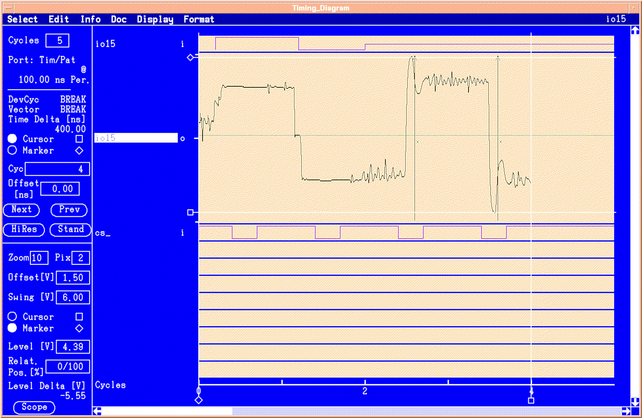
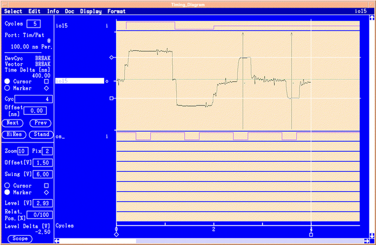
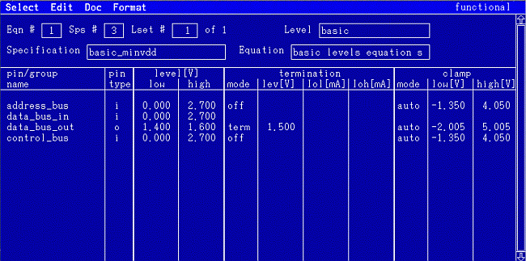

Clamps
The tester's pin electronics also include clamps. The clamps can be schematically seen in the pin electronics shown in the second figure. The clamps are also activated when the driver is set to tri-state. The clamps can be used to clean up the signal by removing ringing and ground bounce. The figures below show the waveform with the clamps set to off (auto) and then the clamps set to on.


If the test environment is well laid out and properly terminated, the signal fidelity should be quite good, the clamps should not be needed and should be set to auto. Setting the clamps to auto allows the test system software to set the clamp levels so that the clamps are effectively disabled.
